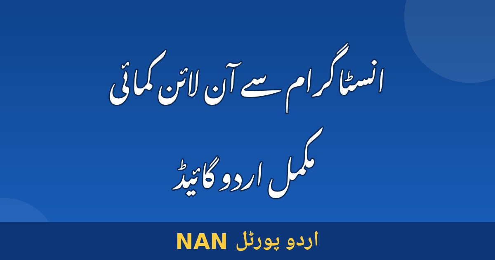

انسٹاگرام سے آن لائن پیسے کیسے کمائیں؟ مکمل اردو گائیڈ

انسٹاگرام اب صرف تصویریں شیئر کرنے کی ایپ نہیں رہا — یہ پاکستان سمیت دنیا بھر میں لاکھوں لوگوں کی آمدنی کا ذریعہ بن چکا ہے۔ طلبہ، گھریلو خواتین، دکان دار اور فری لانسرز سب انسٹاگرام سے پیسے کما رہے ہیں، اور اس کے لیے نہ بڑی سرمایہ کاری چاہیے اور نہ ہی مہنگا سامان — صرف ایک موبائل، انٹرنیٹ اور مستقل مزاجی کافی ہے۔ اس مضمون میں انسٹاگرام سے کمائی کے تمام آزمودہ طریقے، اکاؤنٹ بنانے سے لے کر پاکستان میں پیمنٹ وصول کرنے تک، قدم بہ قدم بتائے گئے ہیں۔
1۔ انسٹاگرام سے کمائی کیسے ہوتی ہے؟
انسٹاگرام خود آپ کو تنخواہ نہیں دیتا — کمائی آپ کی توجہ اور اعتماد سے ہوتی ہے۔ جب لوگ آپ کی ویڈیوز دیکھتے ہیں اور آپ پر بھروسہ کرتے ہیں، تو برانڈز آپ کو اپنی مصنوعات کی تشہیر کے لیے پیسے دیتے ہیں۔ کمائی کے سات بڑے راستے ہیں: برانڈ ڈیلز اور اسپانسر شدہ پوسٹس، ایفیلیٹ مارکیٹنگ، اپنی مصنوعات یا سروس بیچنا، دوسروں کے لیے مواد بنانا (یو جی سی)، شاؤٹ آؤٹ، سبسکرپشن اور تحائف، اور انسٹاگرام سے کلائنٹ حاصل کر کے فری لانسنگ۔
2۔ پہلا قدم: پروفیشنل اکاؤنٹ بنائیں
کمائی کے لیے عام پرسنل اکاؤنٹ کافی نہیں — اسے پروفیشنل (کریئیٹر یا بزنس) اکاؤنٹ میں بدلیں۔ انسٹاگرام ایپ میں سیٹنگز میں جا کر "اکاؤنٹ کی قسم" سے کریئیٹر اکاؤنٹ منتخب کریں — یہ مکمل طور پر مفت ہے۔ پروفیشنل اکاؤنٹ سے آپ کو معلوم ہوگا کہ کون سی پوسٹ کتنی دیکھی گئی اور آپ کے فالوورز کس وقت آن لائن ہوتے ہیں۔ اس کے بعد اپنا موضوع (نِش) چنیں — مثلاً کھانا پکانا، فیشن، تعلیم، ٹیکنالوجی، مزاح یا اسلامی مواد۔ ایک ہی موضوع پر مستقل مواد بنانے والا اکاؤنٹ جلد بڑھتا ہے، کیونکہ لوگ جانتے ہیں کہ انہیں آپ سے کیا ملے گا۔
3۔ بائیو اور پروفائل — آپ کی دکان کا بورڈ
کوئی بھی نیا شخص آپ کی پروفائل پر آئے تو تین سیکنڈ میں فیصلہ کرتا ہے کہ فالو کرنا ہے یا نہیں۔ اس لیے بائیو صاف اور واضح لکھیں: آپ کیا کرتے ہیں، کس کی مدد کرتے ہیں اور رابطے کا طریقہ کیا ہے۔ مثال: "روزانہ آسان اردو ترکیبیں | گھر بیٹھے سیکھیں | کاروبار کے لیے ڈی ایم کریں"۔ پروفائل تصویر صاف اور پہچان میں آنے والی ہو، اور ہائی لائٹس میں اپنے بہترین مواد، کسٹمر کے تبصرے یا قیمتوں کی تفصیل محفوظ کریں۔ واٹس ایپ نمبر یا ای میل بائیو میں شامل کرنا کلائنٹس کے لیے رابطہ آسان بنا دیتا ہے۔
4۔ ریلز — فالوورز بڑھانے کا تیز ترین راستہ
انسٹاگرام کا الگورتھم ریلز کو سب سے زیادہ لوگوں تک پہنچاتا ہے، اور یہی آپ کی ترقی کا انجن ہے۔ ہفتے میں کم از کم تین سے چار ریلز بنائیں، ہر ایک 15 سے 45 سیکنڈ کی۔ ریل کی پہلی دو سیکنڈ میں ہی دلچسپ بات کہیں — مثلاً "یہ غلطی آپ کے پیسے ضائع کر رہی ہے!" — تاکہ دیکھنے والا رک جائے۔ ٹرینڈنگ آڈیو استعمال کریں، کیپشن میں سوال پوچھیں تاکہ لوگ تبصرہ کریں، اور اپنی ریلز شام 7 سے 10 بجے پوسٹ کریں جب فالوورز زیادہ تر آن لائن ہوتے ہیں۔ یاد رکھیں: ایک وائرل ریل آپ کے فالوورز دُگنے کر سکتی ہے۔
5۔ برانڈ ڈیلز اور اسپانسر شدہ پوسٹس
جب آپ کے فالوورز چند ہزار ہو جائیں اور لوگ آپ کی پوسٹس پر اچھا ردعمل دیں، تو چھوٹے برانڈز خود رابطہ کرنا شروع کر دیتے ہیں۔ برانڈ آپ کو اپنی مصنوعات بھیجتا ہے اور آپ اس کی ویڈیو یا تصویر بنا کر پوسٹ کرتے ہیں — اس کے بدلے فیس یا مفت مصنوعات ملتی ہیں۔ پاکستان میں چھوٹے اکاؤنٹس کو بھی ایک پوسٹ کے چند ہزار روپے مل سکتے ہیں، اور بڑے اکاؤنٹس لاکھوں لیتے ہیں۔ برانڈ سے رابطہ خود بھی کیا جا سکتا ہے: اپنے موضوع سے متعلق برانڈز کو پیشہ ورانہ پیغام بھیجیں اور بتائیں کہ آپ ان کی مصنوعات کو اپنے فالوورز تک کیسے پہنچا سکتے ہیں۔
6۔ ایفیلیٹ مارکیٹنگ — لنک شیئر کریں، کمیشن کمائیں
ایفیلیٹ مارکیٹنگ میں آپ کسی آن لائن اسٹور کی مصنوعات کا لنک شیئر کرتے ہیں، اور جب کوئی آپ کے لنک سے خریداری کرے تو آپ کو کمیشن ملتا ہے۔ انسٹاگرام بائیو میں لنک لگائیں یا اسٹوریز میں "لنک" اسٹیکر استعمال کریں۔ پاکستان میں دراز ایفیلیٹ پروگرام سب سے مقبول ہے، اس کے علاوہ ایمازون اور علی ایکسپریس کے ایفیلیٹ پروگرام بھی استعمال کیے جاتے ہیں۔ کامیابی کا راز یہ ہے کہ صرف وہی مصنوعات بتائیں جنہیں آپ نے خود آزمایا ہو یا جن پر آپ کو یقین ہو — جھوٹی تعریف سے اعتماد ٹوٹتا ہے اور فالوورز چلے جاتے ہیں۔
7۔ اپنی مصنوعات یا سروس بیچیں
انسٹاگرام آپ کی اپنی دکان بھی بن سکتا ہے۔ اگر آپ ہاتھ سے بنی چیزیں بناتے ہیں — جیسے کپڑے، جیولری، کیک یا مہندی — تو انسٹاگرام شاپ کے ذریعے براہِ راست فروخت کریں۔ اسی طرح اگر آپ کوئی مہارت رکھتے ہیں — گرافک ڈیزائن، ویڈیو ایڈیٹنگ، اردو کونٹینٹ رائٹنگ یا سوشل میڈیا مینجمنٹ — تو اپنی سروس کی مثالیں پوسٹ کر کے کلائنٹ حاصل کریں۔ بہت سے پاکستانی فری لانسرز کے پہلے کلائنٹ انسٹاگرام سے ہی ملے ہیں۔
8۔ یو جی سی اور شاؤٹ آؤٹ — بغیر فالوورز کے بھی کمائی
یو جی سی یعنی "یوزر جنریٹڈ کونٹینٹ" ایک نیا اور تیزی سے بڑھتا ہوا راستہ ہے: برانڈز آپ سے اپنی مصنوعات کی ویڈیو بنواتے ہیں اور اسے اپنے اکاؤنٹ پر لگاتے ہیں — آپ کے فالوورز کی تعداد سے کوئی فرق نہیں پڑتا، صرف ویڈیو کا معیار دیکھا جاتا ہے۔ اسی طرح شاؤٹ آؤٹ میں آپ کسی چھوٹے کاروبار یا اکاؤنٹ کی تشہیر اپنی اسٹوری یا پوسٹ میں کرتے ہیں اور فیس لیتے ہیں۔ یہ دونوں طریقے نئے اکاؤنٹس کے لیے بہترین ہیں، کیونکہ ان میں بڑے فالوورز کی ضرورت نہیں ہوتی۔
9۔ پاکستان میں پیمنٹ کیسے وصول کریں؟
کمائی کے بعد سب سے اہم سوال پیمنٹ کا ہے۔ پاکستانی برانڈز عام طور پر جاز کیش، ایزی پیسہ یا بینک ٹرانسفر سے ادائیگی کرتے ہیں — اس لیے ان تینوں اکاؤنٹس کو تیار رکھیں۔ غیر ملکی برانڈز اور کلائنٹس کے لیے Payoneer اکاؤنٹ بنائیں، جو پاکستان میں قانونی طور پر کام کرتا ہے اور اس سے رقم اپنے بینک اکاؤنٹ میں منتقل کی جا سکتی ہے۔ پیمنٹ ہمیشہ کام سے پہلے جزوی اور کام کے بعد مکمل لینے کی کوشش کریں۔
10۔ کتنی کمائی ممکن ہے؟ حقیقی توقعات
انسٹاگرام سے کمائی راتوں رات نہیں ہوتی — عام طور پر پہلے تین سے چھ ماہ صرف اکاؤنٹ بنانے اور فالوورز حاصل کرنے میں لگتے ہیں۔ ہزار سے پانچ ہزار فالوورز کے اکاؤنٹ سے ماہانہ چند ہزار روپے کی شروعات ممکن ہے، دس ہزار سے پچاس ہزار فالوورز پر ماہانہ بیس سے پچاس ہزار روپے تک پہنچا جا سکتا ہے، اور ایک لاکھ سے زائد فالوورز والے اکاؤنٹس لاکھوں روپے ماہانہ کماتے ہیں۔ فالوورز کی تعداد سے زیادہ اہم ان کی مصروفیت ہے — دس ہزار سرگرم فالوورز، ایک لاکھ غیر فعال فالوورز سے بہتر ہیں۔
11۔ عام غلطیاں جو ترقی روک دیتی ہیں
- فالوورز خریدنا: خریدے ہوئے فالوورز جعلی ہوتے ہیں، پوسٹس پر ردعمل نہیں دیتے اور اکاؤنٹ کی ساکھ خراب کرتے ہیں — انسٹاگرام ایسے اکاؤنٹس کی رسائی بھی کم کر دیتا ہے۔
- بے ترتیب مواد: آج کھانا، کل سیاست اور پرسوں مزاح — ایسے اکاؤنٹ پر کوئی بھروسہ نہیں کرتا۔ ایک موضوع پر قائم رہیں۔
- دوسروں کا مواد چوری کرنا: کاپی شدہ ویڈیوز پر انسٹاگرام رسائی کم کر دیتا ہے اور اکاؤنٹ بند بھی ہو سکتا ہے۔
- غیر مستقل مزاجی: ہفتوں غائب رہ کر واپس آنا فالوورز کو بھولنے پر مجبور کر دیتا ہے۔ کم از کم ہفتے میں تین پوسٹس کا شیڈول رکھیں۔
- ہر چیز بیچنا: ہر پوسٹ میں اشتہار دینے سے فالوورز تنگ آ جاتے ہیں — چار مفید پوسٹس کے بعد ایک تشہیری پوسٹ کا تناسب بہتر ہے۔
12۔ پہلے 30 دن کا عملی منصوبہ
پہلے ہفتے میں پروفیشنل اکاؤنٹ بنائیں، موضوع چنیں اور بائیو درست کریں۔ دوسرے ہفتے میں دس ریلز بنائیں اور اپنے موضوع کے بڑے اکاؤنٹس پر تبصرے کر کے لوگوں کی توجہ حاصل کریں۔ تیسرے ہفتے میں روزانہ ایک ریل اور دو اسٹوریز پوسٹ کریں، اور ہر تبصرے کا جواب دیں تاکہ کمیونٹی بنے۔ چوتھے ہفتے میں جائزہ لیں کہ کون سی پوسٹ سب سے زیادہ دیکھی گئی، اور اسی انداز میں مزید مواد بنائیں۔ تیس دن کے بعد آپ کے پاس ایک صاف اکاؤنٹ، مواد کی لائبریری اور سیکھا ہوا تجربہ ہوگا — اسی بنیاد پر اگلے تین ماہ میں کمائی شروع ہو سکتی ہے۔
13۔ اکثر پوچھے جانے والے سوالات
سوال: انسٹاگرام سے کمائی کے لیے کتنے فالوورز ضروری ہیں؟
جواب: کوئی مقررہ حد نہیں — ایک ہزار سرگرم فالوورز کے ساتھ بھی چھوٹی برانڈ ڈیلز اور ایفیلیٹ کمائی شروع ہو سکتی ہے۔ یو جی سی میں تو فالوورز کی تعداد دیکھی ہی نہیں جاتی۔
سوال: کیا انسٹاگرام سے کمائی حلال ہے؟
جواب: جائز مصنوعات اور سچی تشہیر سے کمائی جائز ہے۔ حرام مصنوعات، جھوٹی تعریف یا دھوکے والی تشہیر سے بچیں۔
سوال: کیا کمائی کے لیے مہنگا موبائل ضروری ہے؟
جواب: نہیں — درمیانے درجے کا اینڈرائیڈ موبائل کافی ہے۔ اچھی روشنی اور صاف آواز مہنگے موبائل سے زیادہ اہم ہیں۔
سوال: انسٹاگرام اکاؤنٹ کیسے بڑھے گا اگر کوئی مجھے نہ جانتا ہو؟
جواب: ریلز آپ کا مواد ان لوگوں تک پہنچاتی ہیں جو آپ کو فالو نہیں کرتے۔ مستقل اچھی ریلز بنائیں، ٹرینڈنگ آڈیو استعمال کریں اور ہر تبصرے کا جواب دیں — ترقی خود بخود ہوگی۔
سوال: کیا ایک سے زیادہ اکاؤنٹ سے کمائی ہو سکتی ہے؟
جواب: جی ہاں، لیکن پہلے ایک اکاؤنٹ کو کامیاب بنا لیں۔ کئی اکاؤنٹ ایک ساتھ چلانا توجہ بکھیر دیتا ہے اور ترقی سست ہو جاتی ہے۔
انسٹاگرام سے کمائی کوئی جادو نہیں، بلکہ ایک مہارت ہے جو مستقل محنت سے سیکھی جاتی ہے۔ آج ہی اپنا اکاؤنٹ پروفیشنل بنائیں، پہلی ریل بنائیں اور تیس دن کے منصوبے پر عمل شروع کریں — چھ ماہ بعد آپ خود حیران ہوں گے کہ آپ کہاں سے کہاں پہنچ گئے۔